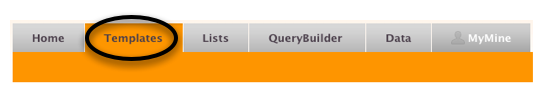
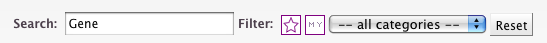

MetabolicMine includes a library of Template queries - predefined queries designed to perform a particular task. Each one has a description and a form to fill in. For example, there are Templates to find GO annotation for a Gene, to retrieve Protein-Protein interactions or even predict the consequences for a set of SNPs.
You can find all metabolicMine Templates on the Templates page, accessible via the toolbar on any page. Here you can search the titles and descriptions of all Templates.
We can add Templates to this page at any time - it only takes a few minutes - so if you have a suggestion, let us know!
On the Templates page, search Templates for 'Gene':
and select the Template 'Gene ---> GO terms':
![[Select Gene --> GO Template]](mmGeneGOtemplate_2.png)